Пылесос моющий BISSELL 17132 CROSSWAVE
Самый компактный из существующих моющих пылесосов. Невероятно мобильный благодаря компактной электрощетке с поворотным механизмом.
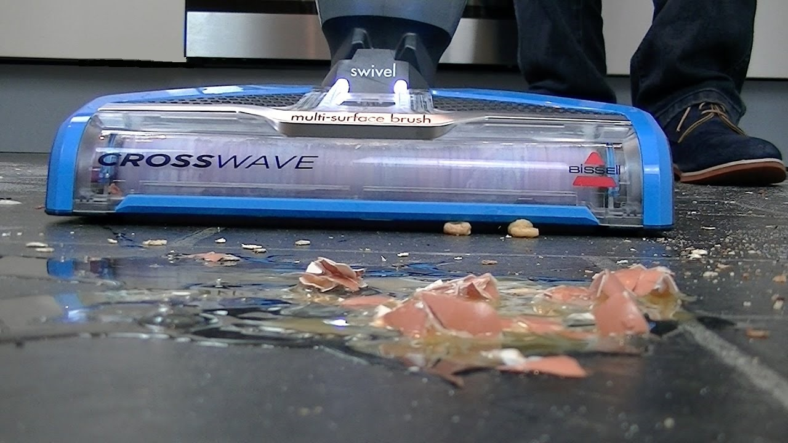BISSELL CROSSWAVE выполняет одновременно 3 функции: сбор мусора и пыли, полноценная влажная уборка и сушка полов, экономя ваше время!
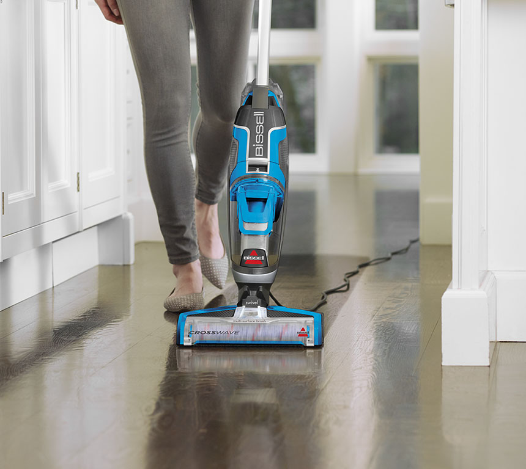Комплексная уборка за один раз. Не нужно тратить время на подготовку и выполнение отдельно сухой и влажной уборки. Теперь эти функции объединены в одном устройстве и выполняются одновременно.
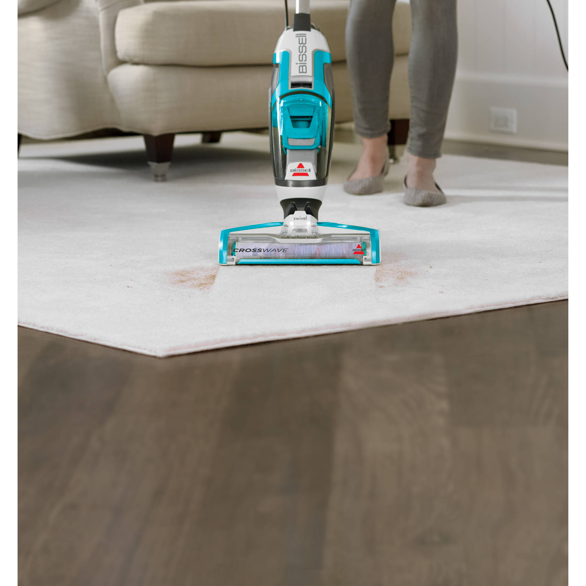Пылесос предназначен для уборки любых твердых полов и напольных ковровых покрытий.
Простота эксплуатации
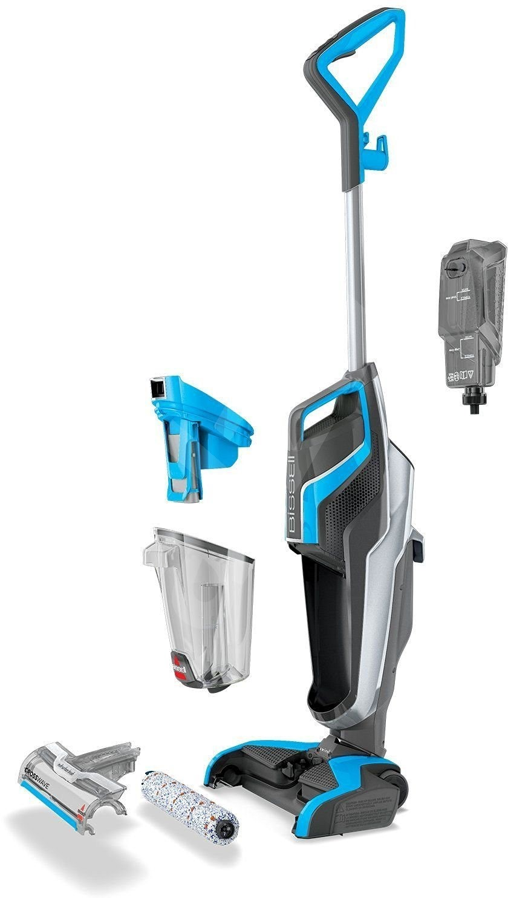Интуитивно понятное управление двумя кнопками
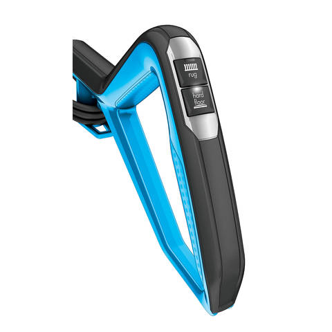Чтобы приступить к чистке включите пылесос, нажав кнопку режима HARD FLOOR для работы с твёрдыми покрытиями или RUG для уборки ковров. Наклоните корпус пылесоса назад; при этом начнет вращаться щеточный валик. Чтобы остановить его вращение, потребуется перевести корпус пылесоса в вертикальное положение.
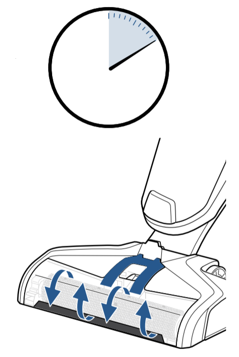Каждый раз перед началом использования пылесоса нажмите и удерживайте курок распыления раствора в течение 10 секунд, чтобы подкачать чистящий раствор в систему. При нажатии на курок загорятся светодиодные индикаторы.
При нажатии кнопки RUG подается вдвое больше раствора, нежели при нажатии кнопки HARD FLOOR; это обеспечивает более эффективную чистку ковровых покрытий.
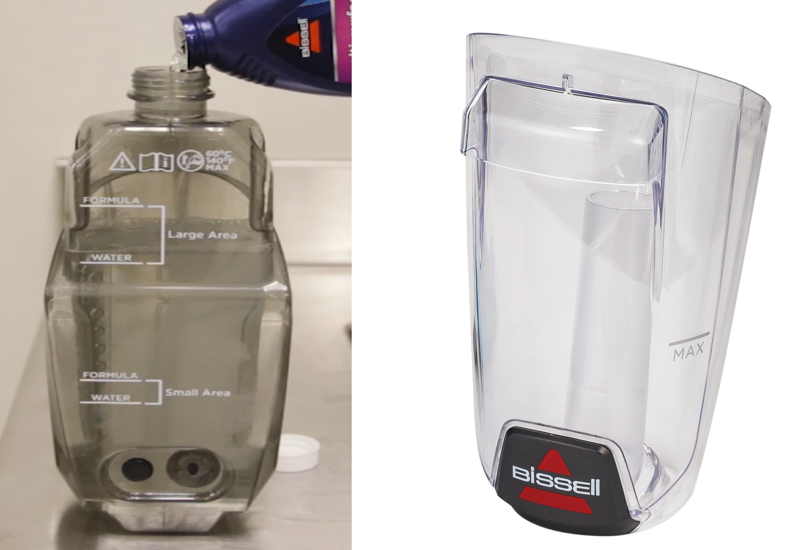Две ёмкости для моющего раствора и грязной воды: пол всегда моется чистой водой с моющим средством.
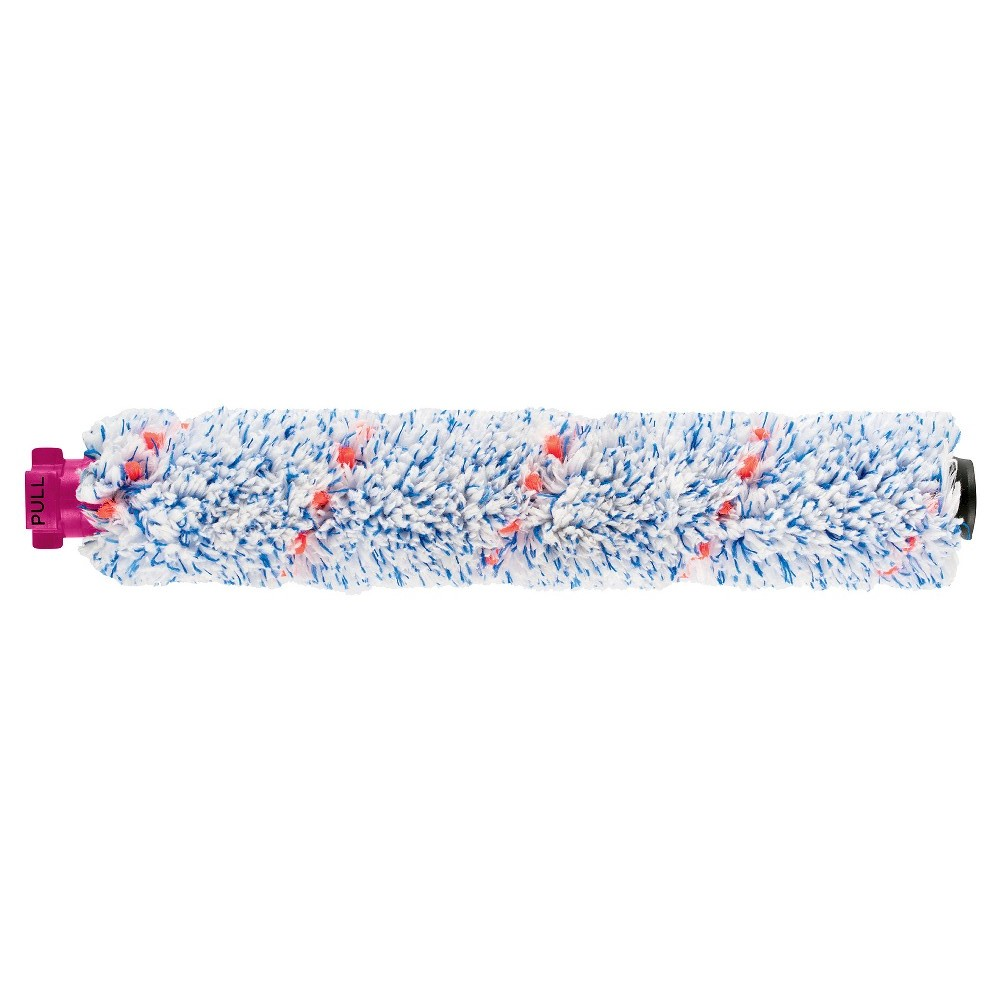Щётка валик двойного действия состоит из инновационной микрофибры и нейлона, чтобы одновременно собирать мусор и протирать пол.
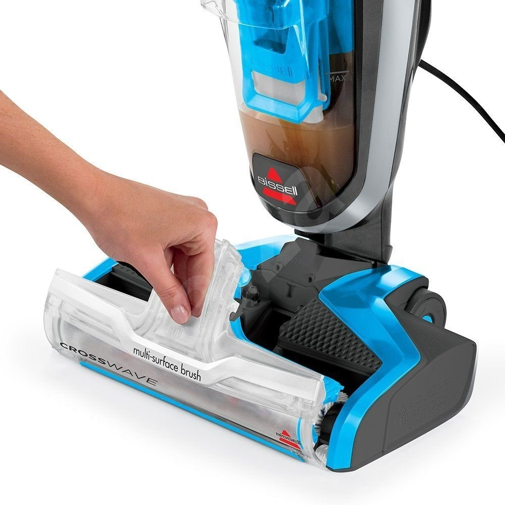Для очистки щётки валика, снимите прозрачную накладку, потянув ее верхнюю часть на себя. Извлеките щеточный валик, потянув его вверх за специальный выступ. Промойте валик и накладку тёплой водой.
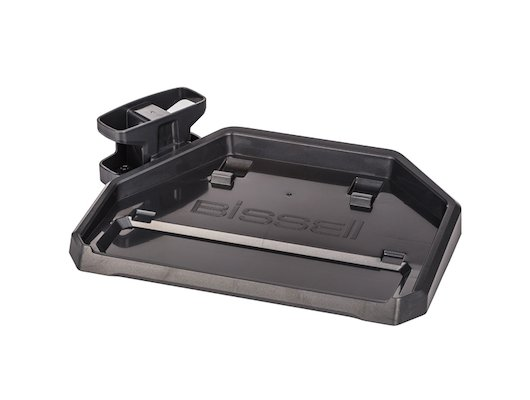Лоток для лёгкой очистки и хранения. Установите пылесос на лоток, налейте воду до уровня метки MAX, включите пылесос, нажав кнопку HARD FLOOR. Наклоните пылесос, установленный на лоток для хранения, назад. Дайте пылесосу поработать 10–15 секунд, пока не будет собрана вся вода. Извлеките валик и установите вертикально на предназначенную для него поставку для сушки.
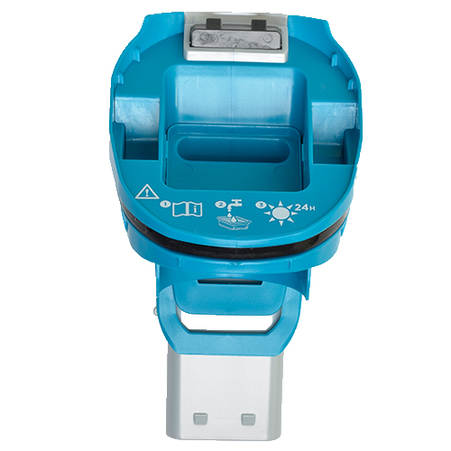Поплавок защищает емкость для грязной воды от переполнения. Когда она заполнится до максимального уровня, поплавок обеспечит отключение вакуумного мотора; при этом раздастся сигнал, указывающий на необходимость слива воды из емкости.
Аргументы для продажи
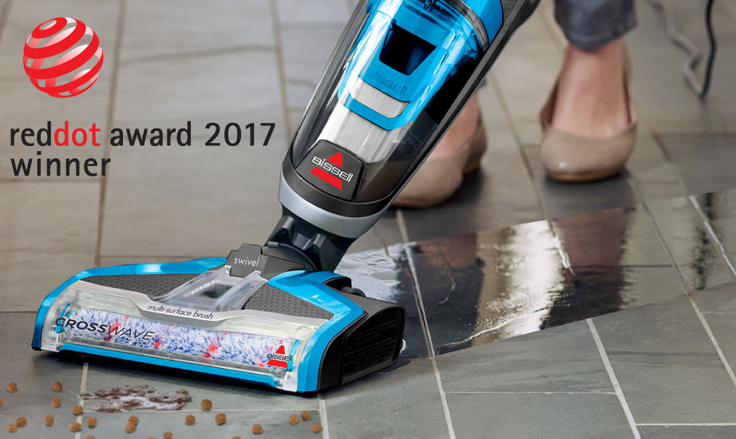- Самый компактный моющий пылесос
- За выдающийся дизайн и функционал в 2017 году удостоен престижной премии Red Dot Design Award
- 3 действия за одно движение: пылесосит, моет и сушит пол
- Экономия времени: нет необходимости пылесосить пол перед мойкой
- Уборка как гладких поверхностей, так и ковров
- Простое и понятное управление
- 2 контенера: для чистой и грязной воды – мойка пола всегда чистой водой
- Лёгкое обслуживание
Технические характеристики
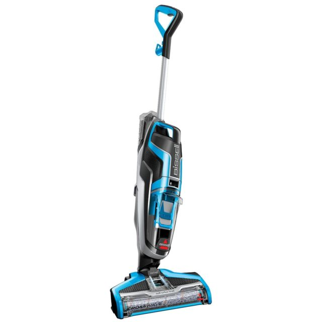
Мощность: 560 Вт
Длина шнура: 7,5 м
Резервуар для чистой воды: 820 мл
Резервуар для грязной воды: 480 мл
Max температура воды для мойки: 60⁰С
Площадь уборки на одном контейнере для воды: до 56 м²
Вес (без воды): 4.9 кг
Габариты (ВхШхГ): 117x30x23 см
Цвет: темно-серый металлик / голубой
Производство: Китай